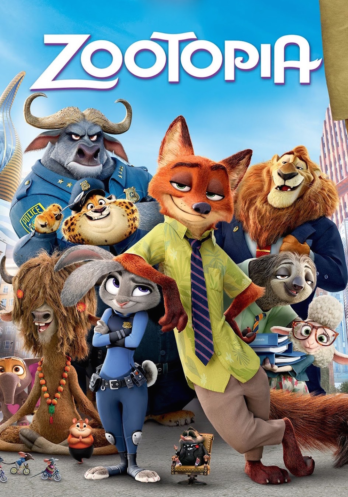
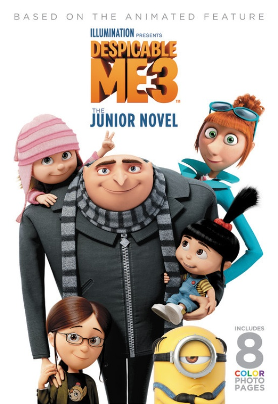
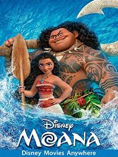
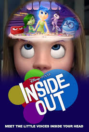

|  | Zootopia | |
|---|---|---|
| Genre: | Animation | Adventure | Comedy | Crime | Family | Mystery | |
| Release date: | 3 March 2016 | |
| Storyline: | From the largest elephant to the smallest shrew, the city of Zootopia is a mammal metropolis where various animals live and thrive. When Judy Hopps becomes the first rabbit to join the police force, she quickly learns how tough it is to enforce the law. Determined to prove herself, Judy jumps at the opportunity to solve a mysterious case. Unfortunately, that means working with Nick Wilde, a wily fox who makes her job even harder. | |
|  | Despicable Me 3 | |
|---|---|---|
| Genre: | Animation | Action | Adventure | Comedy | Family | Sci-Fi | |
| Release date: | 29 June 2017 | |
| Storyline: | After he is fired from the Anti-Villain League for failing to take down the latest bad guy to threaten humanity, Gru finds himself in the midst of a major identity crisis. But when a mysterious stranger shows up to inform Gru that he has a long-lost twin brother-a brother who desperately wishes to follow in his twin's despicable footsteps-one former super-villain will rediscover just how good it feels to be bad. | |
|  | Moana | |
|---|---|---|
| Genre: | Animation | Adventure | Comedy | Family | Fantasy | Musical | Thriller | |
| Release date: | 1 December 2016 | |
| Storyline: | Moana Waialiki is a sea voyaging enthusiast and the only daughter of a chief in a long line of navigators. When her island's fishermen can't catch any fish and the crops fail, she learns that the demigod Maui caused the blight by stealing the heart of the goddess, Te Fiti. The only way to heal the island is to persuade Maui to return Te Fiti's heart, so Moana sets off on an epic journey across the Pacific. The film is based on stories from Polynesian mythology. | |
|  | Inside out | |
|---|---|---|
| Genre: | Animation | Adventure | Comedy | Drama | Family | Fantasy | |
| Release date: | 18 June 2015 | |
| Storyline: | Growing up can be a bumpy road, and it's no exception for Riley, who is uprooted from her Midwest life when her father starts a new job in San Francisco. Like all of us, Riley is guided by her emotions - Joy, Fear, Anger, Disgust and Sadness. The emotions live in Headquarters, the control center inside Riley's mind, where they help advise her through everyday life. As Riley and her emotions struggle to adjust to a new life in San Francisco, turmoil ensues in Headquarters. Although Joy, Riley's main and most important emotion, tries to keep things positive, the emotions conflict on how best to navigate a new city, house and school. | |